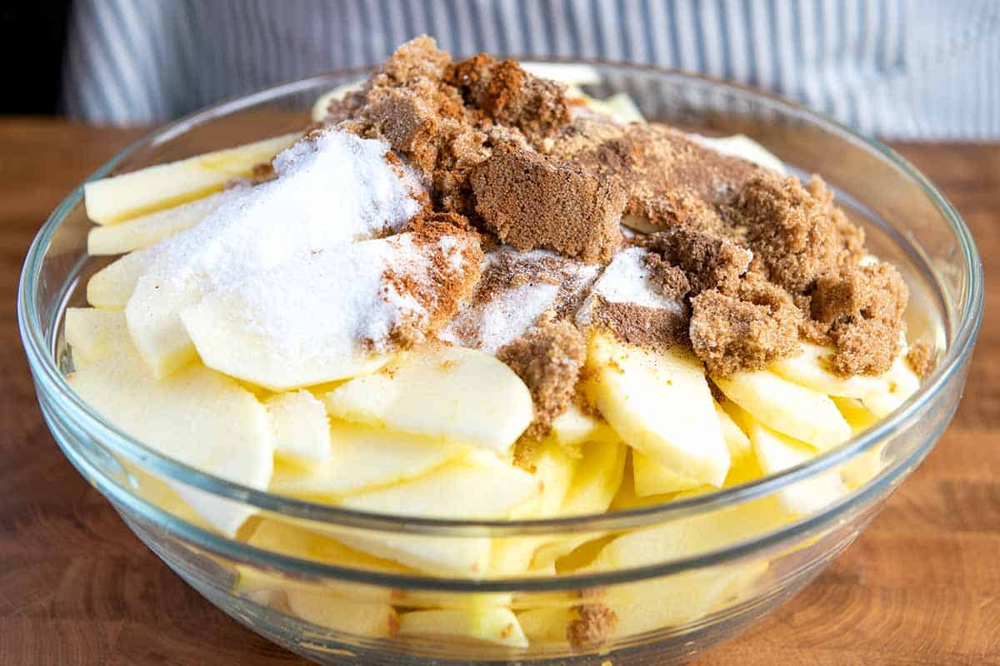
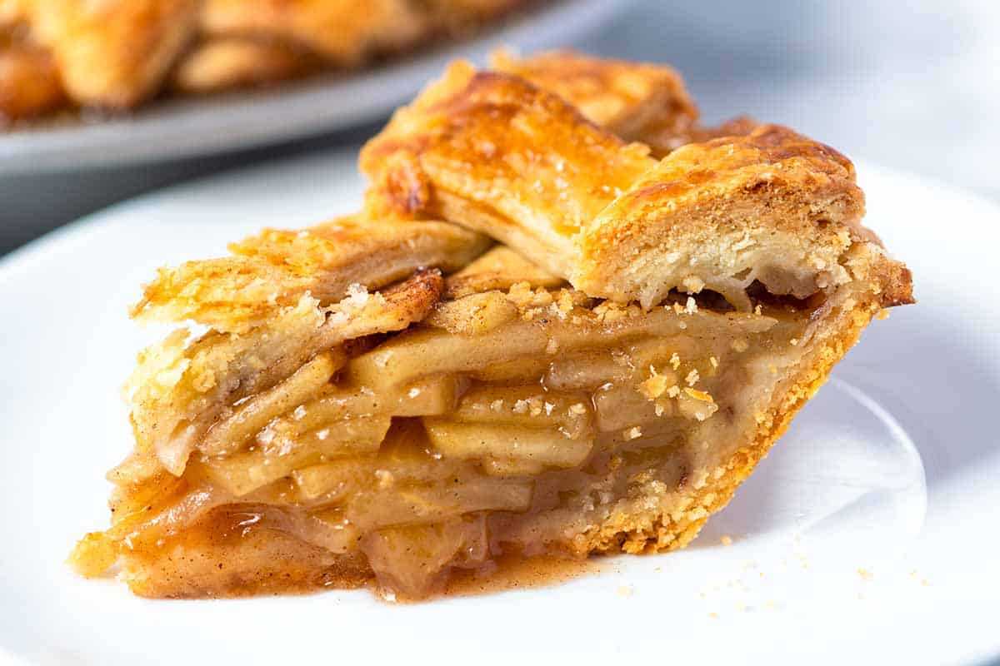

Apple pie
Our favorite recipe for making a classic apple pie from scratch. This recipe guarantees apple pie with perfectly cooked (not mushy) apples surrounded by a thickened and gently spiced sauce all baked inside a flaky, golden-brown crust.
Ingredients
-
1 box (14.1 oz) refrigerated Pillsbury™ Pie Crusts (2 Count), softened as directed on box
- 6 cups thinly sliced, peeled apples (6 medium)
- 3/4 cup sugar
- 2 tablespoons all-purpose flour
- 3/4 teaspoon ground cinnamon
- 1/4 teaspoon salt
- 1/8 teaspoon ground nutmeg
- 1 tablespoon lemon juice

Preparation Steps
- Heat oven to 425°F. Place 1 pie crust in un-greased 9-inch glass pie plate. Press firmly against side and bottom.
- In large bowl, gently mix filling ingredients; spoon into crust-lined pie plate. Top with second crust. Wrap excess top crust under bottom crust edge, pressing edges together to seal; flute. Cut slits or shapes in several places in top crust.
- Bake 40 to 45 minutes or until apples are tender and crust is golden brown. Cover edge of crust with 2- to 3-inch wide strips of foil after first 15 to 20 minutes of baking to prevent excessive browning. Cool on cooling rack at least 2 hours before serving.
enjoy!
